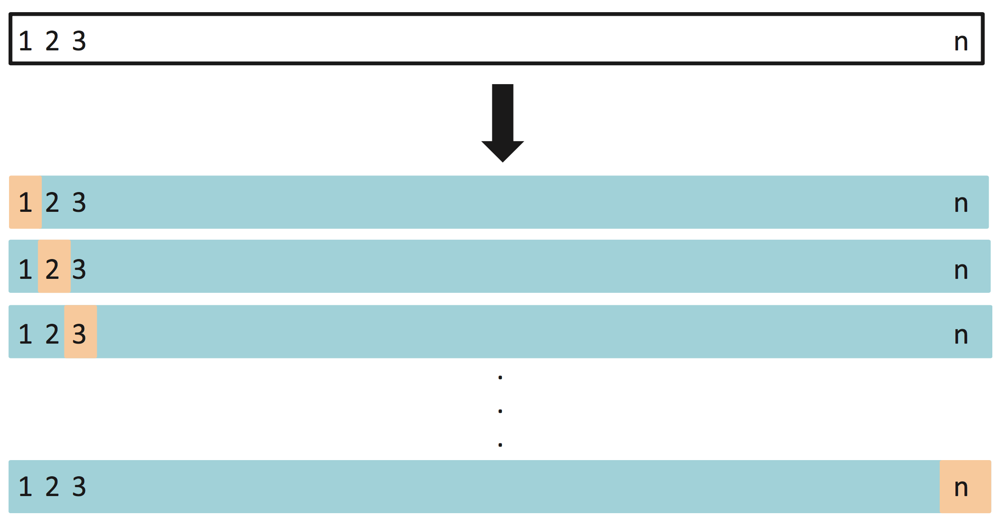

SDS/CSC 293: Machine Learning
Albert Y. Kim
Last updated on 2019-02-11
Schedule
Lec 5: Mon 2/11
Annoucements
- Slack
#generalannouncement about new#mp1channel. It is your responsibility to stay on top of all messages sent in this channel. - Added clarification on what external sources you can use in MP1 project instructions.
- Wednesday’s lecture is devoted to working on MP1
Todays Topics/Activities
1. Chalk Talk
- Discussion of solutions to Lec03 code exercises.
- Recap of Lec04: crossvalidation
- Regression
2. Tweet of the day
Shared with me by Dr. Jenny Smetzer. I agree with Ms. Damour’s opinion. You don’t have to, but her ideas are still worth thinking about. They relate to “points of diminishing returns” and “polishing the cannonball” as discussed for mini-project 1. Here are some excerpts:
- “Overqualified and overprepared, too many women still hold back. Women feel confident only when they are perfect.” IMO this applies to more demographic groups than just women.
- “First, parents and teachers can stop praising inefficient overwork, even if it results in good grades.”
- “A colleague of mine likes to remind teenagers that in classes where any score above 90 counts as an A, the different between a 91 and a 99 is a life.” In other words, work-life balance.
Girls need to become tactical about school, to figure out how to get the same good grades, while doing a little bit less https://t.co/Achouetew6
— NYT Opinion (@nytopinion) February 7, 2019
Lec 4: Wed 2/6
Annoucements
- DataFest is a weekend-long “data science hackathon” for teams of up to 5 students and is at UMass the weekend of March 29-31! Info session by Prof. Randi Garcia today 7-8pm in Sabin-Reed 301!
- ‚ÄúMultiple Imputation Methods in Cluster Randomzied Trials‚Äù talk by Prof.¬†Brittney Bailey from Amherst College is tomorrow 12:10pm in McConnell B15. Free üçï!!!
Todays Topics/Activities
1. Chalk Talk
- Mini-project 1 is now assigned; see Mini-Projects page.
- Recap of Lec03 + exercise solutions.
- Crossvalidation. See images:
- Image 1: Validation set approach:

- Image 2: k = 5 fold crossvalidation:
- Image 3: Leave-one-out crossvalidation (LOOCV):

- Image 1: Validation set approach:
Lec 3: Mon 2/4
Annoucements
- Slack: Go over
#questions. - Syllabus finalized
- Explanation of readings in schedule above.
- Mini-project 1 groups posted; see Mini-Projects page. MP1 on splines itself will be assigned on Wednesday after we cover crossvalidation.
Todays Topics/Activities
1. Chalk Talk
- Recap of Lec02.
- Splines are piecewise continuous cubic polynomials with smoothness constraints (1st and 2nd derivatives are 0 at all knots) See bottom-left plot below.
- Optional reading only if you’re curious: How are splines fit? Linear algebra! See page 93-94 of this PDF.
2. In-class exercise
Go over code for Lec03 and do the exercises.
Lec 2: Wed 1/30
Annoucements
- Slack: Vote in two latest
#pollsand go over#questions. - Go over updated schedule above, in particular “Important Dates”
- DataCamp “Modeling with Data in the tidyverse” assigned:
- Make sure you can see the class DataCamp group by clicking here. If you cannot, then read the Google Doc in Lec01
- Due Wed 2/6 at 1pm. Should take about 4 hours.
- Only thing that is graded is whether you complete it, not the number of points.
- This assumes familiarity with the
tidyversesuite of R packages; see the December email in the Google Doc in Lec01. - The DataCamp course builds up to Chapter 4’s “Validation set prediction framework”
Todays Topics/Activities
1. Chalk Talk
- Recap of Lec01: \(f(\vec{x})\) and \(\hat{f}(\vec{x})\)
- Based on code for
Lec02posted in Code tab of menu bar for course webpage. - Check out House Prices: Advanced Regression Techniques Kaggle competition.
- Added after lecture: Link to ModernDive chapter with an example on logarithmic transformations. You’ll also be seeing log-transformations in this week’s DataCamp assignment!
2. Tweet of the day
This class is just part of a larger phenomenon of resources spread very thin:
On campuses across America, the surge in student demand for computer science courses is far outstripping the supply of professors https://t.co/9dwUMZ0eg8
— The New York Times (@nytimes) January 24, 2019
Lec 1: Mon 1/27
Annoucements
- If you haven’t already, please go over the following Google Doc with important information about the course and steps you should complete to get setup, in particular the Intro Survey. The whole process should take about 20 minutes.
- Added on Sun 1/27 6PM: Create an account on Kaggle.com using your Smith (or Five College) email address.
Todays Topics/Activities
2. Background I will assume
- You have seen multiple regression before (not necessarily taken a class on it).
- The
tidyversesuite of R packages for data science, in particularggplot2anddplyr.
For more information about what level you should know this, please see the Google Doc -> Email from December.
3. Prepartion for Lec02
I highly recommend you start these steps as soon as you can, so that you’ll have two chances to go to the Spinelli tutoring hours if you need help before Wednesday’s lecture. Note the Spinelli tutoring hours are Sun-Thurs 7-9pm in Sabin-Reed 301.
- Have R and RStudio installed on your laptops.
- Install some extra tools:
- macOS users: Go to Apple’s developer page and install the appropriate version of Command Line Tools. Hint: Google “How do I know what version of macOS I have?”
- Windows users: Install
Rtools35.exe.
- Install the standard versions of the
tidyverseanddevtoolspackages as you normally would. - Install the development version of the
moderndivepackage by running:devtools::install_github("moderndive/moderndive") - Run the code below. If you get no errors and a file
submission.csvgets saved to your computer, you’re ready for Lec02!
library(tidyverse)
library(moderndive)
# 1. Load in training and test data
train <- read_csv("https://rudeboybert.github.io/SDS293/static/train.csv")
test <- read_csv("https://rudeboybert.github.io/SDS293/static/test.csv")
# 2. Fit model on training data
house_model <- lm(SalePrice ~ YrSold, data = train)
# 3. Apply fitted model to get predictions for test data
submission <- get_regression_points(house_model, newdata = test, ID = "Id") %>%
select(Id, SalePrice = SalePrice_hat)
# 4. Output predictions to CSV
write_csv(submission, "submission.csv")